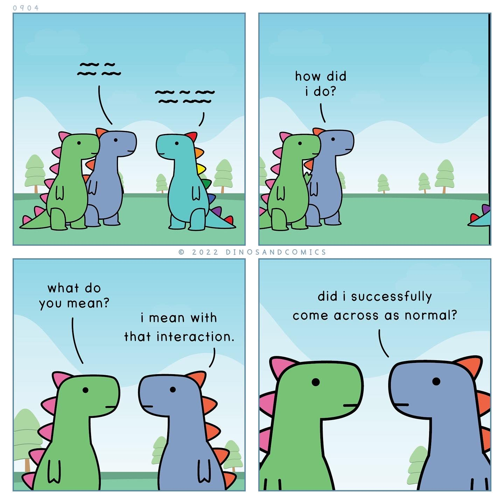

Me trying to socialize at ACL 😬 (Credit: dinosandcomics)
After this I looked, and behold, a great multitude that no one could number, from every nation, from all tribes and peoples and languages, standing before the throne and before the Lamb, clothed in white robes, with palm branches in their hands, and crying out with a loud voice, 'Salvation belongs to our God who sits on the throne, and to the Lamb!'
— Revelation 7:9-10 ESV
As told in the Bible, in the beginning, God created the heavens—God's space—and the earth. In Eden, God walked in the garden among adam—heaven and earth in one place. He created humans for worship and partnership in ruling the kingdom and, in being partners, invited us to a choice—a choice to trust God and his wisdom or to become our own gods and seek our own. Humanity chose, and has chosen repeatedly, itself, but despite that God has not given up on us. The story arc of most of the Bible and our world is God's redemption mission to reunite heaven and earth, i.e. to reunite himself and us, into a redeemed world where there is no more pain, death, tears, or wrongdoing against one another, but rather only joy in him and one another. Thus, the gospel fundamentally is not about an arbitrary belief we hold or a place we go to, but a present and promised reality to redeem this world and incarnate a new kingdom order built on love.
When Jesus walked the earth, he embodied this work of renewing and establishing God's kingdom of heaven on earth. "The time is fulfilled, and the kingdom of God is at hand; repent and believe in the gospel" (Mark 1:15). In the places that Jesus healed the sick, casted out demons, fellowshipped with the poor and outcast, or showed compassion toward and served the people, he created these pockets of heaven. These pockets were places of heaven coming to earth—glimpses of his kingdom of love and grace incarnate. In the present time of "already but not yet", we continue his work to create and grow these pockets, until the day that new heaven and new earth are fully here and one.
For a complete and better telling of the above, check out this video!
The picture painted in Revelation 7:9-10 is so beautiful because it captures the openness of the invitation to the gospel with the complexities of peoples of all different nations and languages coming together to worship. One of the things that drew me to join Chinese churches post-college were the annual meetings and joint services, one of the few times at which the Cantonese, Mandarin, and English congregations would all gather in the same room to worship God and administrate the church. Every song, prayer, and vote would have to be voiced in all three languages, which could turn an hour-long meeting into three times that. To some that felt laborious, but to me it felt like a glimpse of the worship of all nations—not so much the annual meeting duties but rather the ability to bring people of different backgrounds and stories and who would not otherwise interact very naturally or normally to a common space of worship, for the same God.
As I write this, I am flying back from ACL 2025 in Vienna, a conference for computational linguistics and advances in AI for natural language processing. A lot of conferences have informal meetups throughout the conference for various interest groups, ranging from specific research focuses to different ethnicities to shared affinities for activities. I've never gone to these before, but since I was the only one from my lab attending ACL this year, I decided to challenge myself to be social and check them out. Most of them were not particularly applicable to me, but then I saw a group called "Christians@NLP".
Upon joining, right away we were off to a great start 😅. The organizer suggested checking out a local church together, but everyone quickly suggested different churches to join because of our different linguistic and denominational backgrounds. No hangout materialized from this, but we decided in spite of that to meetup during a coffee break on the first day of main conference sessions. We eventually gathered in a quiet corner of the building and decided, among the 15-20 of us, to just to go around the group and share a bit about ourselves. We had undergrads, graduate students, and industry engineers and scientists. People came from the US, various European countries, Korea, and Chile, just to name a few. There were Catholics, Orthodox Christians, and other Protestants of many different traditions, and while many were raised in Christian families, others came to faith later in life. We shared questions about faith and academics (whether being smart and following the Christian God were mutually exclusive), how to glorify God in our work, and prayer requests for colleagues and others around us. Despite coming from different prayer traditions, we were able to pray for one another and the attendees of the conference. A couple days later, we met again to eat lunch together and share more about our stories and questions. We even had opportunities to invite other passerbys in and share about it with other conference attendees afterward.
This whole experience struck me for at least two reasons. First, I never thought I would see my work and faith co-occur in this way. I've experienced God in my personal work and conduct with others and have talked about God with my coworkers, but it has never been something I shared in a larger group of researchers. The idea of praying before a meeting at an academic gathering is itself strange, and yet there we were, academics talking about faith and praying and clearly on fire for God. Second, I was struck by how we managed to bring people of such diverse backgrounds into the same room. The organizer did a great job, but it was pretty chaotic trying to find a time that worked and even just getting everyone to find where the group was meeting. That we all showed up at all was itself incredible, and the fact that we had such diverse peoples, languages, and cultures represented is something I don't think I will experience in its fullness all that often in this lifetime. Where I least expected it this past week, it became a beautiful pocket of heaven.
This certainly was not the first time that someone organized a Christian meetup at a conference, but my hope is to make sure that it is not the last. I hope this is also an encouragement to anyone who sees it to consider where they can bring heaven to earth, whether in their respective conferences, workplaces, or other gatherings where you would not expect people to talk about God. The process can be messy, but in the chaos comes a deeper beauty where we get to see a fuller picture of Christ reflected in us.